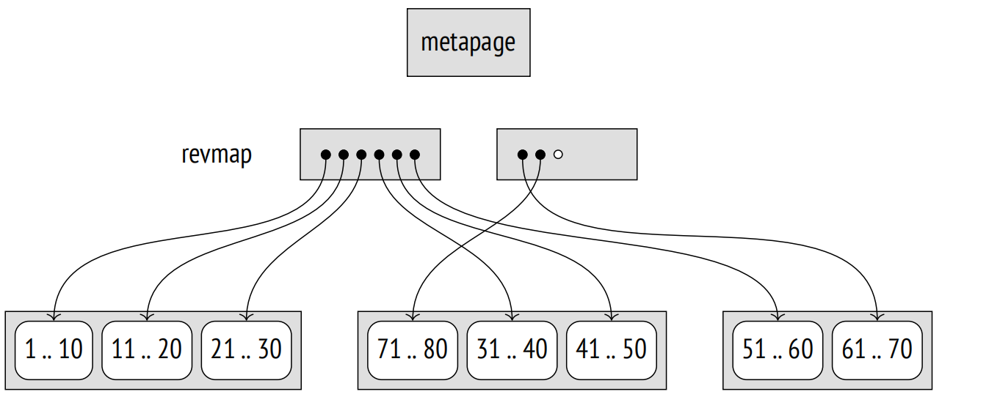
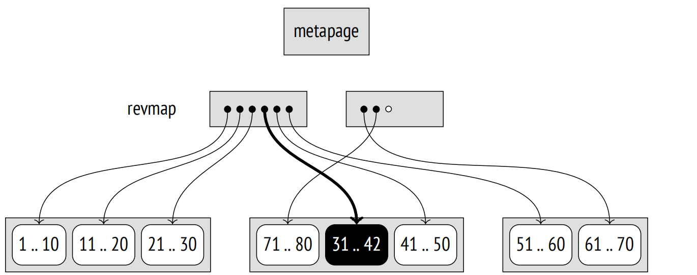
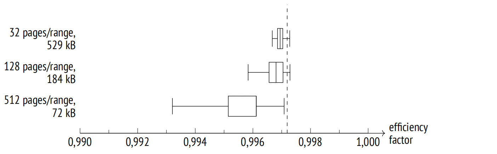
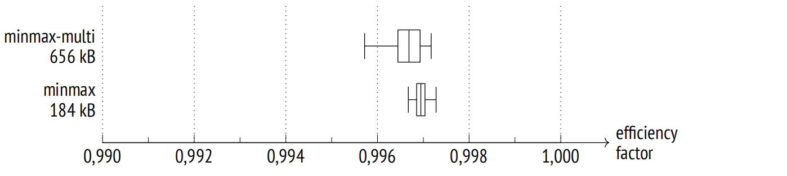
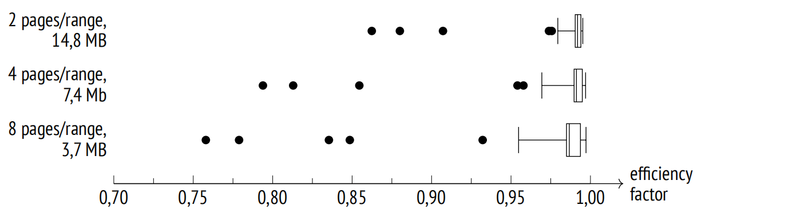

第 29 章：BRIN
29.1 总览
与为快速找到所需行的其他索引不同，BRIN 1 旨在过滤掉不必要的行。BRIN 访问方法主要用于几个 TB 及以上的大表，因此较小的索引尺寸优于搜索精度。
为了加快搜索，整个表被划分为多个范围，因此得名：块范围索引。每个范围包含若干个页面。索引不存储 TIDS，只保留每个范围的摘要信息。对于 ordinal 数据类型，在最简单的情况下，是最小值和最大值，但不同的操作符类可能会收集范围中值的不同信息。
范围中的页面数量在创建索引时根据 pages_per_range 存储参数值定义。
如果查询条件引用了索引列，那么所有保证没有匹配项的范围都可以跳过。索引将以有损位图的形式返回其他所有范围的页面；这些页面的所有行都必须重新检查。
因此，BRIN 非常适合具有局部化值的列 (即，存储的值彼此靠近的列具有相似的摘要信息属性) 。对于 ordinal 数据类型，这意味着值必须按升序或降序存储，也就是说，它们的物理位置与"大于"和"小于"操作定义的逻辑顺序之间具有很高的相关性。对于其他类型的摘要信息，“相似属性"可能有所不同。
BRIN 更像是顺序堆扫描的加速器，而不是传统意义上的索引。它可以看作是分区的一种替代方案，每个范围代表一个虚拟分区。
29.2 样例
我们的示例数据库中没有足够大到需要使用 BRIN 索引的表，但我们可以想象一下，分析报告要求我们拥有一张非规范化表，里面包含特定机场所有出发和到达航班的汇总信息，甚至到具体座位的占用情况。每个机场的数据都会在相应时区午夜时每日更新。添加的数据不会被更新或删除。
这张表如下所示：
CREATE TABLE flights_bi(
airport_code char(3),
airport_coord point, -- airport coordinates
airport_utc_offset interval, -- timezone
flight_no char(6),
flight_type text, -- departure or arrival
scheduled_time timestamptz,
actual_time timestamptz,
aircraft_code char(3),
seat_no varchar(4),
fare_conditions varchar(10), -- travel class
passenger_id varchar(20),
passenger_name text
);数据加载可以通过嵌套循环来模拟：2 外循环对应于天数 (示例数据库中存储的是年度数据)，内循环则基于时区。因此，即使在循环中数据没有显式地进行排序，加载后的数据在时间和机场方面或多或少是有序的。
我将加载一个大约 4GB，包含约 3000 万行的现有数据库的副本：3
postgres$ pg_restore -d demo -c flights_bi.dump
=> ANALYZE flights_bi;
=> SELECT count(*) FROM flights_bi;
count
−−−−−−−−−−
30517076
(1 row)
=> SELECT pg_size_pretty(pg_total_relation_size('flights_bi'));
pg_size_pretty
−−−−−−−−−−−−−−−−
4129 MB
(1 row)我们无法称之为大表，但这个数据量足以展示 BRIN 的工作原理。我会提前创建一个索引：
=> CREATE INDEX ON flights_bi USING brin(scheduled_time);
=> SELECT pg_size_pretty(pg_total_relation_size(
'flights_bi_scheduled_time_idx'
));
pg_size_pretty
−−−−−−−−−−−−−−−−
184 kB
(1 row)默认配置下，索引占用的空间很小。
即使启用了数据去重，B 树索引的大小也要大上千倍。的确，其效率也要高得多，但是对于真正的大表来说，额外的存储空间可能变成了一种无法承受的奢侈。
=> CREATE INDEX flights_bi_btree_idx ON flights_bi(scheduled_time);
=> SELECT pg_size_pretty(pg_total_relation_size(
'flights_bi_btree_idx'
));
pg_size_pretty
−−−−−−−−−−−−−−−−
210 MB
(1 row)
=> DROP INDEX flights_bi_btree_idx;29.3 页面布局
BRIN 索引的零页是用于保存索引结构信息的元页面。
在元数据的某个偏移量处是带有摘要信息的页面。此类页面中的每个索引条目都包含特定块范围的摘要信息。
元页面和摘要信息之间的空间由范围映射占据，有时也称为反向映射 (因此通常缩写为 revmap)。它实际上是一个指向相应索引行的指针数组；该数组中的索引号与范围号相对应。
随着表的扩展，范围映射的大小也在增长。如果映射不适合分配的页面，它就会占用下一个页面，并且先前所有位于此页面的索引条目都会被转移到其他页面。由于一个页面可以容纳很多指针，因此这样的转移非常少见。
BRIN 索引页面可以像往常一样通过 pageinspect 扩展显示。元数据包括范围大小和为范围映射保留的页面数量：
=> SELECT pagesperrange, lastrevmappage
FROM brin_metapage_info(get_raw_page(
'flights_bi_scheduled_time_idx', 0
));
pagesperrange | lastrevmappage
−−−−−−−−−−−−−−−+−−−−−−−−−−−−−−−−
128 | 4
(1 row)此处，范围映射占用了四个页面，从第一个页面到第四个页面。让我们看一下指向包含摘要数据的索引条目指针：
=> SELECT *
FROM brin_revmap_data(get_raw_page(
'flights_bi_scheduled_time_idx', 1
));
pages
−−−−−−−−−−
(6,197)
(6,198)
(6,199)
...
(6,195)
(6,196)
(1360 rows)如果范围还未提要，那么范围映射中的指针为空。
以下是几个范围的摘要信息：
=> SELECT itemoffset, blknum, value
FROM brin_page_items(
get_raw_page('flights_bi_scheduled_time_idx', 6),
'flights_bi_scheduled_time_idx'
)
ORDER BY blknum
LIMIT 3 \gx
−[ RECORD 1 ]−−−−−−−−−−−−−−−−−−−−−−−−−−−−−−−−−−−−−−−−−−−−−−−−−−
itemoffset | 197
blknum | 0
value | {2016−08−15 02:45:00+03 .. 2016−08−15 16:20:00+03}
−[ RECORD 2 ]−−−−−−−−−−−−−−−−−−−−−−−−−−−−−−−−−−−−−−−−−−−−−−−−−−
itemoffset | 198
blknum | 128
value | {2016−08−15 05:50:00+03 .. 2016−08−15 18:55:00+03}
−[ RECORD 3 ]−−−−−−−−−−−−−−−−−−−−−−−−−−−−−−−−−−−−−−−−−−−−−−−−−−
itemoffset | 199
blknum | 256
value | {2016−08−15 07:15:00+03 .. 2016−08−15 18:50:00+03}29.4 搜索
如果 BRIN 索引支持查询条件，4 那么执行器会扫描范围映射和每个范围的摘要信息。如果某个范围内的数据可能与搜索键匹配，属于这个范围的所有页面都会被添加到位图中。由于 BRIN 不保留单独元组的 ID，所以位图总是有损的。
将数据与搜索键进行匹配是由 consistency 函数执行的，它解释了范围的摘要信息。未提要的范围始终会被添加到位图中。
接收到的位图将按往常方式用于扫描表。值得一提的是，堆页读取按块范围顺序进行，并采用预取机制。
29.5 摘要信息更新
29.5.1 插入值
当往堆页面中添加新元组时，相应索引范围的摘要信息会被更新。5 使用简单的算术运算，根据页号计算范围号，然后通过范围映射定位摘要信息。范围编号是根据页面编号通过简单的算术运算计算得出的，然后通过范围映射定位摘要信息。
为了确认当前摘要信息是否需要扩展，会使用 addition 函数。如果需要扩展并且页面有足够的空闲空间，那么将就地进行扩展 (不添加新的索引条目)。
假设我们向页面 13 添加了一个值为 42 的元组。范围号是通过页号整除范围大小计算得出的。假设范围大小为四个页面，我们得到范围号 3；由于范围号是从零开始的，我们在范围映射中取第四个指针。该范围中的最小值是 31，最大值是 40。添加的值超出了这些限制，所以最大值增加了：
如果无法就地更新，则会添加一个新条目，并且范围映射会被修改。
29.5.2 范围提要
前文所述内容适用于新元组出现在已经提要的范围内的情况。在建立索引时，所有已有的范围都会被提要，但随着表的扩大，新的页面可能会超出这些范围。
如果索引是在启用了 autosummarize 存储参数的情况下创建的，那么新范围将立即进行提要。然而，在数据仓库中，行数据通常是批量添加，而不是逐条添加，在这种情况下，这种模式可能会严重减慢插入速度。
默认情况下，新范围不会立即被提要。这并不影响索引的正确性，因为没有摘要信息的范围始终会被扫描。提要是异步执行的，无论是在表清理期间还是通过调用 brin_summarize_new_values 函数 (或处理单个范围的 brin_summarize_range 函数) 来手动发起。
范围提要 6 不会锁定表更新。在此过程开始时，在索引中会为这个范围插入一个占位条目。如果在扫描这个范围时，此范围内的数据发生变化，那么占位符将会被这些变更的摘要信息更新。然后 union 函数会将此数据与对应范围的摘要信息合并。
理论上，有时候在一些行被删除后，摘要信息可能会缩减。但是，虽然 GiST 索引可以在页面分裂后重新分配数据，BRIN 索引的摘要信息永远不会缩小，只会变得更宽。这里通常不需要缩减，因为数据存储通常仅用于追加新数据。你可以通过调用 brin_desummarize_range 函数手动删除该范围的摘要信息，以便再次进行提要，但没有线索表明哪些范围可能从中受益。
因此，BRIN 主要针对的是尺寸非常大的表，这些表要么很少有更新，通常只是将新行添加到文件末尾，要么根本就不进行更新。它主要用于在数据仓库中以建立分析报告。
29.6 Minmax 类
对于允许比较值的数据类型，摘要信息至少包括最大值和最小值。相应操作符类的名称中包含 minmax 一词：7
=> SELECT opcname
FROM pg_am am
JOIN pg_opclass opc ON opcmethod = am.oid
WHERE amname = 'brin'
AND opcname LIKE '%minmax_ops'
ORDER BY opcname;
opcname
−−−−−−−−−−−−−−−−−−−−−−−−
bit_minmax_ops
bpchar_minmax_ops
bytea_minmax_ops
char_minmax_ops
...
timestamptz_minmax_ops
timetz_minmax_ops
uuid_minmax_ops
varbit_minmax_ops
(26 rows)这些操作符类的支持函数如下：
=> SELECT amprocnum, amproc::regproc
FROM pg_am am
JOIN pg_opclass opc ON opcmethod = am.oid
JOIN pg_amproc amop ON amprocfamily = opcfamily
WHERE amname = 'brin'
AND opcname = 'numeric_minmax_ops'
ORDER BY amprocnum;
amprocnum | amproc
−−−−−−−−−−−+−−−−−−−−−−−−−−−−−−−−−−−−
1 | brin_minmax_opcinfo
2 | brin_minmax_add_value
3 | brin_minmax_consistent
4 | brin_minmax_union
(4 rows)第一个函数返回操作符类的元数据，其他所有函数均已描述过：这些函数用于插入新值、检查一致性以及执行合并操作。
minmax 类包含我们在 B 树中看到的相同的比较操作符：
=> SELECT amopopr::regoperator, oprcode::regproc, amopstrategy
FROM pg_am am
JOIN pg_opclass opc ON opcmethod = am.oid
JOIN pg_amop amop ON amopfamily = opcfamily
JOIN pg_operator opr ON opr.oid = amopopr
WHERE amname = 'brin'
AND opcname = 'numeric_minmax_ops'
ORDER BY amopstrategy;
amopopr | oprcode | amopstrategy
−−−−−−−−−−−−−−−−−−−−−+−−−−−−−−−−−−+−−−−−−−−−−−−−−
<(numeric,numeric) | numeric_lt | 1
<=(numeric,numeric) | numeric_le | 2
=(numeric,numeric) | numeric_eq | 3
>=(numeric,numeric) | numeric_ge | 4
>(numeric,numeric) | numeric_gt | 5
(5 rows)29.6.1 选择要索引的列
使用这个操作符类索引哪些列才是有意义的？如前所述，如果行的物理位置与值的逻辑顺序相关，那么这样的索引效果便很好。
让我们回顾一下上面的例子。
=> SELECT attname, correlation, n_distinct
FROM pg_stats
WHERE tablename = 'flights_bi'
ORDER BY correlation DESC NULLS LAST;
attname | correlation | n_distinct
−−−−−−−−−−−−−−−−−−−−+−−−−−−−−−−−−−−−−+−−−−−−−−−−−−−−
scheduled_time | 0.9999949 | 25926
actual_time | 0.9999948 | 34469
fare_conditions | 0.7976897 | 3
flight_type | 0.4981733 | 2
airport_utc_offset | 0.4440067 | 11
aircraft_code | 0.19249801 | 8
airport_code | 0.061483838 | 104
seat_no | 0.0024594965 | 461
flight_no | 0.0020146023 | 710
passenger_id | −0.00046121294 | 2.610987e+06
passenger_name | −0.012388787 | 8618
airport_coord | | 0
(12 rows)数据按时间排序 (无论是计划时间还是实际时间，几乎没有区别)：新条目按时间顺序添加，由于数据既不更新也不删除，所有的行都将依次进入表的主分支。
fare_conditions、flight_type 和 airport_utc_offset 这几列的相关性相对较高，但它们存储的不同值太少。
其他列的相关性很低，以至于使用 minmax 操作符类对它们进行索引没有任何意义。
29.6.2 范围大小与搜索效率
可以根据用于存储特定值的页面数量来确定合适的范围大小。
让我们看一下 scheduled_time 列，并获取 24 小时内执飞的所有航班的信息。我们首先需要找出与此时间区间相关的数据占用了多少个表页面。
为了得到这个数字，我们可以基于如下事实：TID 由页号和偏移量组成。不幸的是，没有内置函数可以将 TID 分解成这两个组成部分，所以我们需要编写我们自己的笨拙函数，通过文本表示进行类型转换。
=> CREATE FUNCTION tid2page(t tid) RETURNS integer
LANGUAGE sql
RETURN (t::text::point)[0]::integer;现在我们可以观察天数是如何在表中分布的：
=> SELECT min(numblk), round(avg(numblk)) avg, max(numblk)
FROM (
SELECT count(distinct tid2page(ctid)) numblk
FROM flights_bi
GROUP BY scheduled_time::date
) t;
min | avg | max
−−−−−−+−−−−−−+−−−−−−
1192 | 1447 | 1512
(1 row)我们可以注意到，数据分布并不完全均匀。以标准的 128 个页面的范围大小来看，每天将占用 9 到 12 个范围。在获取某一特定日期的数据时，索引扫描将返回实际需要的行，以及一些落入相同范围关联到其他日期的行。范围大小越大，读取的额外边界值就越多；我们可以通过减小或增加范围大小来改变它们的数量。
让我们尝试查询某一天的数据 (我已经用默认设置创建了一个索引)。为了简单起见，我将禁止并行执行：
=> SET max_parallel_workers_per_gather = 0;
=> \set d '2016-08-15 02:45:00+03'
=> EXPLAIN (analyze, buffers, costs off, timing off, summary off)
SELECT *
FROM flights_bi
WHERE scheduled_time >= :'d'::timestamptz
AND scheduled_time < :'d'::timestamptz + interval '1 day';
QUERY PLAN
−−−−−−−−−−−−−−−−−−−−−−−−−−−−−−−−−−−−−−−−−−−−−−−−−−−−−−−−−−−−−−−−−−−−−
Bitmap Heap Scan on flights_bi (actual rows=81964 loops=1)
Recheck Cond: ((scheduled_time >= '2016−08−15 02:45:00+03'::ti...
Rows Removed by Index Recheck: 11606
Heap Blocks: lossy=1536
Buffers: shared hit=1561
−> Bitmap Index Scan on flights_bi_scheduled_time_idx
(actual rows=15360 loops=1)
Index Cond: ((scheduled_time >= '2016−08−15 02:45:00+03'::...
Buffers: shared hit=25
Planning:
Buffers: shared hit=1
(11 rows)我们可以将 BRIN 索引对某个特定查询的效率因子定义为索引扫描中跳过的页面数量与表中总的页面数量的比值。如果效率因子为零，那么索引访问会退化为顺序扫描 (不考虑额外成本)。效率因子越高，需要读取的页面就越少。但是，由于某些页面包含需要返回的数据而不能被跳过，因此效率因子总是小于 1。
在这个特定案例中，效率因子是 $\frac{528417 - 1561}{528417} \approx 0.997$，其中 528,417 是表中的页面数。
然而，我们不能基于单个值得出任何有意义的结论。即使我们拥有均匀数据和理想的相关性，效率仍会有所不同，因为至少范围边界不会与页面边界匹配。我们只有将效率因子视为一个随机值并分析其分布情况，才能获得全貌。
对于我们的示例，我们可以选择一年中所有不同的日子，检查每个值的执行计划，并基于这个选择计算统计数据。我们可以轻易使该过程自动化，因为 EXPLAIN 命令可以以 JSON 格式返回结果，这很便于解析。我不会在这里提供所有代码，但以下代码片段包含了所有关键细节：
=> DO $$
DECLARE
plan jsonb;
BEGIN
EXECUTE
'EXPLAIN (analyze, buffers, timing off, costs off, format json)
SELECT * FROM flights_bi
WHERE scheduled_time >= $1
AND scheduled_time < $1 + interval ''1 day'''
USING '2016-08-15 02:45:00+03'::timestamptz
INTO plan;
RAISE NOTICE 'shared hit=%, read=%',
plan -> 0 -> 'Plan' ->> 'Shared Hit Blocks',
plan -> 0 -> 'Plan' ->> 'Shared Read Blocks';
END;
$$;
NOTICE: shared hit=1561, read=0
DO结果可以通过箱线图 (也称为"盒须图”) 来直观展示。这里的须表示第一和第四四分位 (也就是说，右须包含了 25% 的最大值，而左须包含了 25% 的最小值)。盒子本身包含剩余的 50% 的值，并标有中位数。更重要的是，这种紧凑的表示方式使我们能够直观地比较不同的结果。下图展示了默认范围大小以及其他两个范围大小 (分别是原大小的四倍和四分之一) 的效率因子分布。
正如我们所预期的，即使对于相对较大的范围，搜索的准确性和效率也很高。
这里的虚线标记了这个查询可能的最大效率因子的平均值，假设一天大约占表的 $\frac{1}{365}$。
注意，效率的提升是以索引大小的增加为代价的。BRIN 在让你找到两者之间的平衡点方面相当灵活。
29.6.3 属性
BRIN 的属性是固定的，不依赖于操作符类。
访问方法属性
=> SELECT a.amname, p.name, pg_indexam_has_property(a.oid, p.name)
FROM pg_am a, unnest(array[
'can_order', 'can_unique', 'can_multi_col',
'can_exclude', 'can_include'
]) p(name)
WHERE a.amname = 'brin';
amname | name | pg_indexam_has_property
−−−−−−−−+−−−−−−−−−−−−−−−+−−−−−−−−−−−−−−−−−−−−−−−−−
brin | can_order | f
brin | can_unique | f
brin | can_multi_col | t
brin | can_exclude | f
brin | can_include | f
(5 rows)显然，BRIN 索引不支持排序或唯一性属性。由于 BRIN 索引总是返回一个位图，因此也不支持排它约束。同样，额外的 INCLUDE 列也没有意义，因为即使是索引键也不存储在 BRIN 索引中。
然而，我们可以创建多列 BRIN 索引。在这种情况下，每列的摘要信息被收集并存储在一个独立的索引条目中，但它们仍然有一个共同的范围映射。如果相同的范围大小适用于所有被索引的列，那么这样的索引是有用的。
或者，基于位图可以合并在一起的事实，我们可以为几个列创建单独的 BRIN 索引。例如：
=> CREATE INDEX ON flights_bi USING brin(airport_utc_offset);
=> EXPLAIN (analyze, costs off, timing off, summary off)
SELECT *
FROM flights_bi
WHERE scheduled_time >= :'d'::timestamptz
AND scheduled_time < :'d'::timestamptz + interval '1 day'
AND airport_utc_offset = '08:00:00';
QUERY PLAN
−−−−−−−−−−−−−−−−−−−−−−−−−−−−−−−−−−−−−−−−−−−−−−−−−−−−−−−−−−−−−−−−−−−−−
Bitmap Heap Scan on flights_bi (actual rows=1658 loops=1)
Recheck Cond: ((scheduled_time >= '2016−08−15 02:45:00+03'::ti...
Rows Removed by Index Recheck: 14077
Heap Blocks: lossy=256
−> BitmapAnd (actual rows=0 loops=1)
−> Bitmap Index Scan on flights_bi_scheduled_time_idx (act...
Index Cond: ((scheduled_time >= '2016−08−15 02:45:00+0...
−> Bitmap Index Scan on flights_bi_airport_utc_offset_idx ...
Index Cond: (airport_utc_offset = '08:00:00'::interval)
(9 rows)索引级属性
=> SELECT p.name, pg_index_has_property(
'flights_bi_scheduled_time_idx', p.name
)
FROM unnest(array[
'clusterable', 'index_scan', 'bitmap_scan', 'backward_scan'
]) p(name);
name | pg_index_has_property
−−−−−−−−−−−−−−−+−−−−−−−−−−−−−−−−−−−−−−−
clusterable | f
index_scan | f
bitmap_scan | t
backward_scan | f
(4 rows)显然，位图扫描是唯一支持的访问类型。
缺乏聚簇可能看起来令人困惑。由于 BRIN 对行的物理顺序敏感，逻辑上可以假设它应当支持重新排序，以最大限度地提高效率。但是，考虑到重建表所需的所有处理和额外磁盘空间，对大表进行聚簇无论如何都是一种奢侈。此外，正如 flights_bi 表的例子所示，数据存储中的某种排序可以自然发生。
列级属性
=> SELECT p.name, pg_index_column_has_property(
'flights_bi_scheduled_time_idx', 1, p.name
)
FROM unnest(array[
'orderable', 'distance_orderable', 'returnable',
'search_array', 'search_nulls'
]) p(name);
name | pg_index_column_has_property
−−−−−−−−−−−−−−−−−−−−+−−−−−−−−−−−−−−−−−−−−−−−−−−−−−−
orderable | f
distance_orderable | f
returnable | f
search_array | f
search_nulls | t
(5 rows)唯一可用的列级属性是对空值的支持。为了追踪某个范围内的空值，摘要信息提供了一个单独的属性：
=> SELECT hasnulls, allnulls, value
FROM brin_page_items(
get_raw_page('flights_bi_airport_utc_offset_idx', 6),
'flights_bi_airport_utc_offset_idx'
)
WHERE itemoffset= 1;
hasnulls | allnulls | value
−−−−−−−−−−+−−−−−−−−−−+−−−−−−−−−−−−−−−−−−−−−−−−
f | f | {03:00:00 .. 03:00:00}
(1 row)29.7 Minmax-Multi 类
数据更新很容易打乱已建立的相关性。问题不在于特定值的实际修改，而在于 MVCC 设计本身：旧版本的行可能在一个页面中被删除，而其新版本可以插入到当前空闲的任何位置，因此无法保持原始行顺序。为了在一定程度上最小化这种影响，我们可以降低 fillfactor 存储参数值，为后续的更新留出更多页面空间。但是，真的值得增加已经很大的表的大小吗？此外，删除操作无论如何都会在现有页面中释放出一些空间，从而为新元组设下陷阱，这些元组本应被添加到文件的末尾。
这种情况可以很容易地被模拟。让我们删除随机选择的 0.1% 比例的行，并对表进行清理操作，以清理一些空间供新元组使用：
=> WITH t AS (
SELECT ctid
FROM flights_bi TABLESAMPLE BERNOULLI(0.1) REPEATABLE(0)
)
DELETE FROM flights_bi
WHERE ctid IN (SELECT ctid FROM t);
DELETE 30180
=> VACUUM flights_bi;现在，让我们在其中一个时区为新的一天添加一些数据。我将简单地复制前一天的数据：
=> INSERT INTO flights_bi
SELECT airport_code, airport_coord, airport_utc_offset,
flight_no, flight_type, scheduled_time + interval '1 day',
actual_time + interval '1 day', aircraft_code, seat_no,
fare_conditions, passenger_id, passenger_name
FROM flights_bi
WHERE date_trunc('day', scheduled_time) = '2017-08-15'
AND airport_utc_offset = '03:00:00';
INSERT 0 40532执行的删除操作足以在所有或几乎所有的范围内释放一些空间。新元组被插入到位于文件中间某处的页面，自动扩展了范围。例如，与第一个范围相关的摘要信息过去可能覆盖的时间少于一天，但现在它包含了整个年份：
=> SELECT value
FROM brin_page_items(
get_raw_page('flights_bi_scheduled_time_idx', 6),
'flights_bi_scheduled_time_idx'
)
WHERE blknum = 0;
value
−−−−−−−−−−−−−−−−−−−−−−−−−−−−−−−−−−−−−−−−−−−−−−−−−−−−
{2016−08−15 02:45:00+03 .. 2017−08−16 09:35:00+03}
(1 row)查询中指定的日期越小，需要扫描的范围就越多。下图显示了这一灾难的严重程度：
为了解决这个问题，我们需要使摘要信息更加复杂一些：不再存储单个连续的范围，而是需要存储多个较小的范围，这些范围加起来覆盖所有的值。然后，其中一个范围可以覆盖主要的数据集，而其余的则处理偶尔的异常值。
这样的功能由 minmax-multi 操作符类提供：8
=> SELECT opcname
FROM pg_am am
JOIN pg_opclass opc ON opcmethod = am.oid
WHERE amname = 'brin'
AND opcname LIKE '%minmax_multi_ops'
ORDER BY opcname;
opcname
−−−−−−−−−−−−−−−−−−−−−−−−−−−−−−
date_minmax_multi_ops
float4_minmax_multi_ops
float8_minmax_multi_ops
inet_minmax_multi_ops
...
time_minmax_multi_ops
timestamp_minmax_multi_ops
timestamptz_minmax_multi_ops
timetz_minmax_multi_ops
uuid_minmax_multi_ops
(19 rows)与 minmax 操作符类相比，minmax-multi 类有一个额外的支持函数，用于计算值之间的距离；这个函数用于确定范围长度，操作符类则努力减少这一长度。
=> SELECT amprocnum, amproc::regproc
FROM pg_am am
JOIN pg_opclass opc ON opcmethod = am.oid
JOIN pg_amproc amop ON amprocfamily = opcfamily
WHERE amname = 'brin'
AND opcname = 'numeric_minmax_multi_ops'
ORDER BY amprocnum;
amprocnum | amproc
−−−−−−−−−−−+−−−−−−−−−−−−−−−−−−−−−−−−−−−−−−−−−−−−
1 | brin_minmax_multi_opcinfo
2 | brin_minmax_multi_add_value
3 | brin_minmax_multi_consistent
4 | brin_minmax_multi_union
5 | brin_minmax_multi_options
11 | brin_minmax_multi_distance_numeric
(6 rows)这类操作符的操作与 minmax 类的操作完全相同。
Minmax-multi 类可以接受 values_per_range 参数，该参数定义了每个范围所允许的摘要值的最大数量。一个摘要值由两个数字 (一个区间) 表示，而单个点只需要一个数字。如果值不够，一些区间会缩小。9
让我们构建一个 minmax-multi 索引来替换现有的索引。我们将每个范围允许的值的数量限制为 16：
=> DROP INDEX flights_bi_scheduled_time_idx;
=> CREATE INDEX ON flights_bi USING brin(
scheduled_time timestamptz_minmax_multi_ops(
values_per_range = 16
)
);图表显示，新索引将效率恢复到了原始水平。不出所料，这也导致了索引大小的增加：
29.8 Inclusion 类
minmax 操作符类与 inclusion 操作符类之间的区别，大致上与 B 树和 GiST 索引之间的区别相似：后者用于不支持比较操作的数据类型，尽管对于它们而言，值的相互对齐仍然有意义。由 inclusion 操作符类提供的特定范围内的摘要信息，由该范围内值的边界框表示。
此处是这些操作符类；数量并不多：
=> SELECT opcname
FROM pg_am am
JOIN pg_opclass opc ON opcmethod = am.oid
WHERE amname = 'brin'
AND opcname LIKE '%inclusion_ops'
ORDER BY opcname;
opcname
−−−−−−−−−−−−−−−−−−−−−
box_inclusion_ops
inet_inclusion_ops
range_inclusion_ops
(3 rows)支持函数的列表通过增加一个必需的函数来扩展，该函数用于合并两个值，以及一系列可选的函数：
=> SELECT amprocnum, amproc::regproc
FROM pg_am am
JOIN pg_opclass opc ON opcmethod = am.oid
JOIN pg_amproc amop ON amprocfamily = opcfamily
WHERE amname = 'brin'
AND opcname = 'box_inclusion_ops'
ORDER BY amprocnum;
amprocnum | amproc
−−−−−−−−−−−+−−−−−−−−−−−−−−−−−−−−−−−−−−−
1 | brin_inclusion_opcinfo
2 | brin_inclusion_add_value
3 | brin_inclusion_consistent
4 | brin_inclusion_union
11 | bound_box
13 | box_contain
(6 rows)在处理可以比较的值时，我们依赖于它们的相关性；但对于其他数据类型，不会收集这样的统计信息，10 因此很难预测基于 inclusion 的 BRIN 索引的效率。
更糟糕的是，相关性极大地影响了索引扫描的成本估算。如果这样的统计信息不可用，它将被视为零。11 因此，规划器无法区分精确和模糊的 inclusion 索引，所以通常会避免使用它们。
PostGIS 会收集空间数据相关性的统计信息。
在此特例下，我们可以假设在机场坐标上建立索引是有意义的，因为经度必须与时区相关联。
与 GiST 谓词不同，BRIN 摘要信息与被索引数据具有相同的类型；因此，为点构建索引并不那么容易。但是，我们可以通过将点转换成虚拟矩形来创建一个表达式索引。
=> CREATE INDEX ON flights_bi USING brin(box(airport_coord))
WITH (pages_per_range = 8);
=> SELECT pg_size_pretty(pg_total_relation_size(
'flights_bi_box_idx'
));
pg_size_pretty
−−−−−−−−−−−−−−−−
3816 kB
(1 row)在时区上建立的索引，如果范围大小相同，大约占用相同的大小 (3288 kB)。
这个类中包含的操作符类似于 GiST 操作符。例如，BRIN 索引可以用来加速在特定区域内点的搜索：
=> SELECT airport_code, airport_name
FROM airports
WHERE box(coordinates) <@ box '135,45,140,50';
airport_code | airport_name
−−−−−−−−−−−−−−+−−−−−−−−−−−−−−−−−−−−−−−−−
KHV | Khabarovsk−Novy Airport
(1 row)但如前所述，除非我们关闭顺序扫描，否则规划器拒绝使用索引扫描：
=> EXPLAIN (costs off)
SELECT *
FROM flights_bi
WHERE box(airport_coord) <@ box '135,45,140,50';
QUERY PLAN
−−−−−−−−−−−−−−−−−−−−−−−−−−−−−−−−−−−−−−−−−−−−−−−−−−−−−−−−−−−−
Seq Scan on flights_bi
Filter: (box(airport_coord) <@ '(140,50),(135,45)'::box)
(2 rows)
=> SET enable_seqscan = off;
=> EXPLAIN (analyze, costs off, timing off, summary off)
SELECT *
FROM flights_bi
WHERE box(airport_coord) <@ box '135,45,140,50';
QUERY PLAN
−−−−−−−−−−−−−−−−−−−−−−−−−−−−−−−−−−−−−−−−−−−−−−−−−−−−−−−−−−−−−−−−−−−−−
Bitmap Heap Scan on flights_bi (actual rows=511414 loops=1)
Recheck Cond: (box(airport_coord) <@ '(140,50),(135,45)'::box)
Rows Removed by Index Recheck: 630756
Heap Blocks: lossy=19656
−> Bitmap Index Scan on flights_bi_box_idx (actual rows=196560...
Index Cond: (box(airport_coord) <@ '(140,50),(135,45)'::box)
(6 rows)
=> RESET enable_seqscan;29.9 Bloom 类
基于布隆过滤器的操作符类允许对任何支持等于操作且定义了哈希函数的数据类型使用 BRIN 索引。如果值分布在不同范围内且它们的物理位置与逻辑顺序没有相关性，那么也可以将这些操作符类应用于常规的 ordinal 数据类型。
这些操作符类的名称中包含 “bloom” 一词：12
=> SELECT opcname
FROM pg_am am
JOIN pg_opclass opc ON opcmethod = am.oid
WHERE amname = 'brin'
AND opcname LIKE '%bloom_ops'
ORDER BY opcname;
opcname
−−−−−−−−−−−−−−−−−−−−−−−
bpchar_bloom_ops
bytea_bloom_ops
char_bloom_ops
...
timestamptz_bloom_ops
timetz_bloom_ops
uuid_bloom_ops
(24 rows)布隆过滤器是一种经典的数据结构，它能够快速检查一个元素是否属于某个集合。这个过滤器非常紧凑，但它允许误报 (false positives)：可能会误认为集合中包含比实际更多的元素。然而，更重要的是，它避免了漏报 (false negative)：如果元素实际存在于集合中，过滤器不会认为它不存在。
这种过滤器是由 m 个比特位组成的数组 (也称为签名)，初始时这些位都被置为零。我们选定 k 个不同的哈希函数，将集合中的任何元素映射到签名的 k 个位上。当一个元素被添加到集合中时，签名中的每一位都会被设置为一。因此，如果与某个元素对应的所有位都被设置为一，则该元素可能存在于集合中；如果至少有一位为零，则可以保证该元素不存在。
在 BRIN 索引的情况下，过滤器处理属于特定范围的索引列的一组值；该范围的摘要信息由构建的布隆过滤器表示。
bloom 扩展 13 提供了一种基于布隆过滤器的索引访问方法。它为每行数据构建一个过滤器，并处理每行的一组列值。这样的索引旨在一次索引多列，并且可以用于临时查询，这种查询中过滤条件里所引用的列是事先未知的。BRIN 索引也可以建立在多个列上，但其摘要信息将包含为这些列中的每一个列构建的独立的布隆过滤器。
布隆过滤器的准确性取决于签名长度。在理论上，可以估算出最优的签名位数 $m = \frac{-n \log_{2} p}{\ln 2}$，其中 n 是集合中元素的数量，p 是发生误报的概率。这两个设置可以通过相应的操作符类参数进行调整：
- n_distinct_per_range 定义了集合中元素的数量；在这种情况下，它是索引列的一个范围中不同值的数量。这个参数值的解释就像对不同值的统计一样：负值表示范围中行的比例，而不是它们的绝对数量。
- false_positive_rate 定义了发生误报的概率。一个接近零的值意味着索引扫描几乎肯定会跳过没有被搜索值的范围。但这并不保证精确搜索，因为被扫描的范围还将包含不匹配查询的额外行。这种行为是由于范围宽度和物理数据位置造成的，而不是由于实际的过滤器属性。
支持函数列表增加了一个哈希函数：
=> SELECT amprocnum, amproc::regproc
FROM pg_am am
JOIN pg_opclass opc ON opcmethod = am.oid
JOIN pg_amproc amop ON amprocfamily = opcfamily
WHERE amname = 'brin'
AND opcname = 'numeric_bloom_ops'
ORDER BY amprocnum;
amprocnum | amproc
−−−−−−−−−−−+−−−−−−−−−−−−−−−−−−−−−−−
1 | brin_bloom_opcinfo
2 | brin_bloom_add_value
3 | brin_bloom_consistent
4 | brin_bloom_union
5 | brin_bloom_options
11 | hash_numeric
(6 rows) 由于布隆过滤器基于哈希运算，因此它只支持等值操作符：
=> SELECT amopopr::regoperator, oprcode::regproc, amopstrategy
FROM pg_am am
JOIN pg_opclass opc ON opcmethod = am.oid
JOIN pg_amop amop ON amopfamily = opcfamily
JOIN pg_operator opr ON opr.oid = amopopr
WHERE amname = 'brin'
AND opcname = 'numeric_bloom_ops'
ORDER BY amopstrategy;
amopopr | oprcode | amopstrategy
−−−−−−−−−−−−−−−−−−−−+−−−−−−−−−−−−+−−−−−−−−−−−−−−
=(numeric,numeric) | numeric_eq | 1
(1 row)让我们以存储航班号的 flight_no 列为例；它几乎没有相关性，因此对于常规范围操作符类来说是无用的。我们将保持默认的 false-positive 设置；至于一个范围内的不同值数量，可以很容易地计算出来。例如，对于一个八页的范围，我们将得到以下的值：
=> SELECT max(nd)
FROM (
SELECT count(distinct flight_no) nd
FROM flights_bi
GROUP BY tid2page(ctid) / 8
) t;
max
−−−−−
22
(1 row)对于较小的范围，这个数字甚至会更低 (但无论如何，操作符类不允许小于 16 的值)。
我们只需创建一个索引并检查执行计划：
=> CREATE INDEX ON flights_bi USING brin(
flight_no bpchar_bloom_ops(
n_distinct_per_range = 22)
)
WITH (pages_per_range = 8);
=> EXPLAIN (analyze, costs off, timing off, summary off)
SELECT *
FROM flights_bi
WHERE flight_no = 'PG0001';
QUERY PLAN
−−−−−−−−−−−−−−−−−−−−−−−−−−−−−−−−−−−−−−−−−−−−−−−−−−−−−−−−−−−−−−−−−−−−−
Bitmap Heap Scan on flights_bi (actual rows=5192 loops=1)
Recheck Cond: (flight_no = 'PG0001'::bpchar)
Rows Removed by Index Recheck: 122894
Heap Blocks: lossy=2168
−> Bitmap Index Scan on flights_bi_flight_no_idx (actual rows=...
Index Cond: (flight_no = 'PG0001'::bpchar)
(6 rows)
=> RESET max_parallel_workers_per_gather;图表显示，对于某些航班号 (由不属于任何须部分的单独点表示)，索引的工作效果不是很好，但总体效率相当高：
-
postgresql.org/docs/14/brin.html
backend/access/brin/README ↩︎ -
edu.postgrespro.ru/internals-14/flights_bi.sql ↩︎
-
edu.postgrespro.ru/internals-\oldstylenums{14}/flights_bi.dump. ↩︎
-
backend/access/brin/brin.c, bringetbitmap function ↩︎
-
backend/access/brin/brin.c, brininsert function ↩︎
-
backend/access/brin/brin.c, summarize_range function ↩︎
-
backend/access/brin/brin_minmax.c ↩︎
-
backend/access/brin/brin_minmax_multi.c ↩︎
-
backend/access/brin/brin_minmax_multi.c, reduce_expanded_ranges function ↩︎
-
backend/commands/analyze.c, compute_scalar_stats function ↩︎
-
backend/utils/adt/selfuncs.c, brincostestimate function ↩︎
-
backend/access/brin/brin_bloom.c ↩︎
-
postgresql.org/docs/14/bloom.html ↩︎